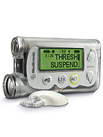
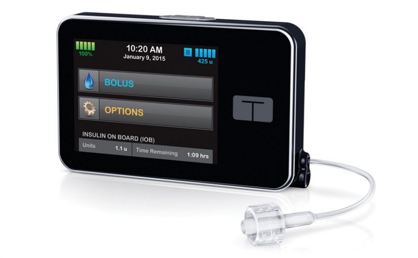
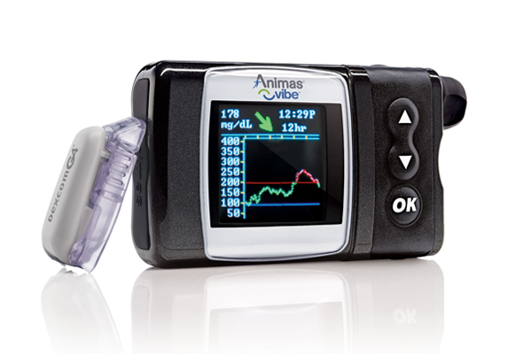
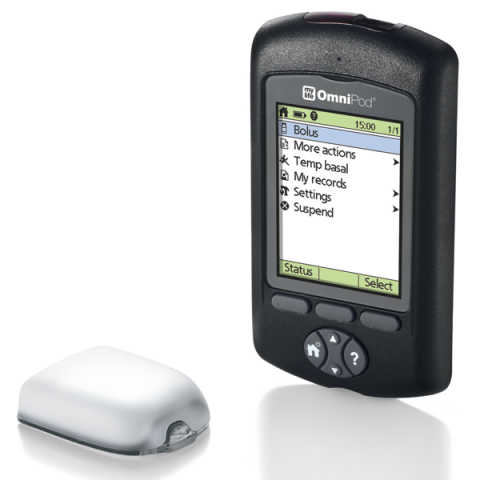
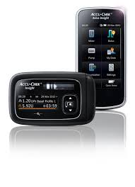
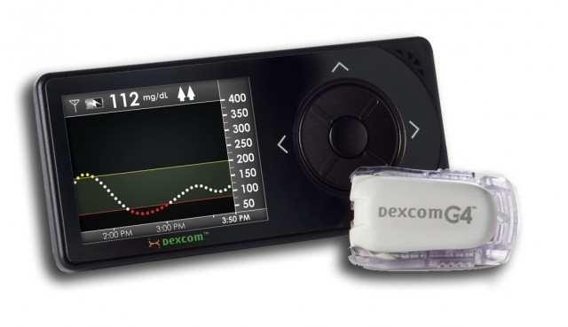
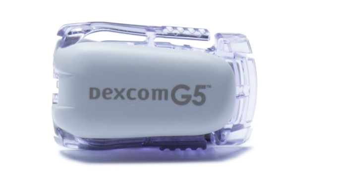
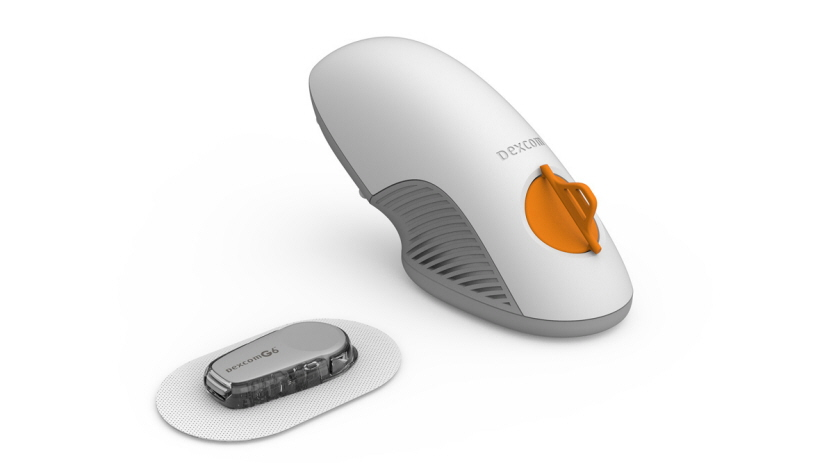
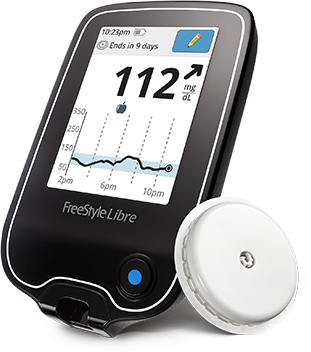
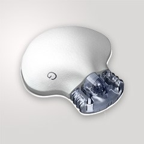

SMARTGUARD™ TECHNOLOGY
Only the MiniMed™ system has SmartGuard™ technology, which takes action for you if your sensor glucose values go below a preset level.* If you don't respond to alarms, SmartGuard™ technology can pause insulin delivery for up to two hours – giving you time to recover.∆
BOLUS WIZARD™ CALCULATOR
This feature automatically calculates and recommends precise bolus doses and helps you avoid insulin stacking if you accidentally set boluses too close together.**
PREDICTIVE ALERTS
The pump lets you know up to 30 minutes ahead if you’re trending high or low, so you can act sooner to keep your glucose levels where you want them.
BUILT-IN CGM
The sensor wirelessly sends glucose information to your pump every five minutes, so you can see how you’re doing, spot trends and make adjustments.

Miniped 530G
MiniMed 530G system is an insulin pump that’s fully integrated with a glucose sensor to give you advanced diabetes control. It’s the only diabetes management system with SmartGuard™ technology that takes action for you and is proven to reduce your risk of lows*. And by helping you keep your glucose levels stable long-term, MiniMed system can help lower both your A1C and your risk of nerve, eye and kidney problems.

T-slim Pump
LARGE COLOR TOUCHSCREEN
Easy to read, simple to use interface
BLUETOOTH® WIRELESS TECHNOLOGY
Modern connectivity for a modern world
SMALLEST AVAILABLE PUMP
Up to 38% smaller than other insulin pumps4
WATERTIGHT CONSTRUCTION
Tested to 3 feet for 30 minutes (IPX7)
RECHARGEABLE BATTERY
Convenient charging via micro-USB port
UPDATABLE SOFTWARE5
Update features using a personal computer

Animas Pump
The Animas® Vibe® is the first continuous glucose monitoring (CGM)-enabled insulin pump with Dexcom G4® Platinum CGM technology. The Animas® Vibe® System is approved for use for persons with diabetes age 2 years and older, so you have the ability to check in on your child's blood glucose levels in real time.

Omnipod Insulin Pump
An Innovative Approach to Continuous Insulin Delivery
The Omnipod® System provides all the benefits of insulin pump therapy while providing more flexibility and freedom than other traditional tubed pumps.
Customizable insulin delivery settings to give you what you need, when you need it.
The Omnipod® System communicates wirelessly2 to program insulin delivery, eliminating the need for cumbersome tubes.
3 days of truly continuous insulin delivery3 thanks to its waterproof1 design.
The cannula inserts automatically with the push of a button, with no needles in sight.

Accu-Chek Insight
he Accu-Chek Insight insulin pump system is designed for easy and discreet insulin pump therapy. This system has been developed to inspire confidence in your diabetes management bringing together blood glucose monitoring, bolus advice, insulin delivery and data management.
Sleek, modern design and a remote control function to fit into your life and provide complete discretion
Intuitive menu with coloured touchscreen handset for improved handling, wherever you are
Pre-filled cartridge of insulin - no need to fill cartridges by hand
Discover intuitive diabetes management that fits into your life.
Glucose Meters

Dexcom G4
2012
7 days Battery
Tracks glucose levels at 5 minute intervals
High and low alarms
High level of accuracy – MARD value 13% in adults
Alerts rate of glucose levels rising/falling
Integrated with Animas Vibe insulin pump
Calibration with blood glucose recommended at least twice daily
Requires a CGM receiver

Dexcom G5
2017
7 days Battery
Has all the same features as G4, plus …
Doesn’t require a CGM receiver – you can use your smartphone to receive data
Larger trend graph display than G4
Integrated with Tandem’s T:slim X2 insulin pump

Dexcoms G6
2018
10 days Battery has all the same features as G5, plus …
Easier set up (no fingerstick, easy sensor applicator)
Predicts lows
Abbott’s

Freestyle Libre
2017
10 days Battery Actually a flash glucose monitor – doesn’t continuously communicate readings
No fingersticks necessary
Can’t be manually calibrated
Warm-up period of 1 hours

Medtronic’s
2018
Guardian Connect
7 days Battery
Sends data straight to iPhone, like the G5
No option of a non-iPhone receiver
Doesn’t need a pump to use the Guardian Connect
Sensor also requires charging
Requires a separate inserter, unlike G6